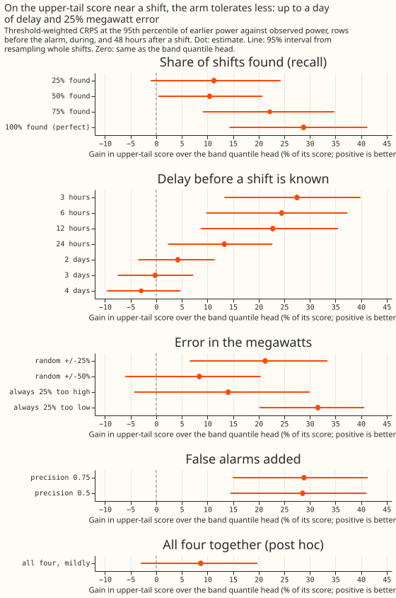
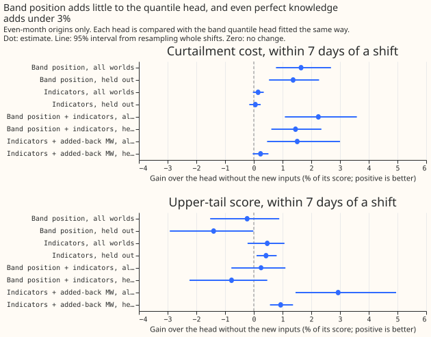
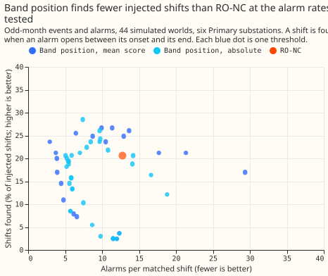
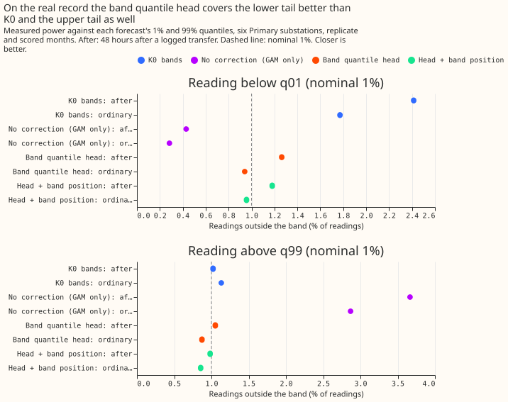

How good must an LSC detector be to beat the best no-detector forecast?
This experiment asks how accurate a load shift detector has to be to improve on a forecast that uses no detector. A load shift (LSC, load shift screen) moves demand from one Primary substation, a substation that feeds local demand, to its neighbours for hours or days. We worked on 44 copies of the real power record of six Primary substations (labelled D5, D9, D10, D11, D14, and D16), each copy with shifts added by a simulator, 411 shifts in all (experiment 141 made the copies). The forecast, K0, is a Kalman filter (an updating estimate of the recent forecast error) that corrects a weather-driven forecast using recent power. Experiment 297 found that an XGBoost quantile regression model of K0's error (BAND_HEAD), which uses no detector, beats the RO-NC detector (the refit-offset neighbour-count detector) when RO-NC's mask sets aside readings. One arm still beat BAND_HEAD on curtailment cost, the forecast cost of cutting a generator's output (£2,000 per MWh, relative between forecasts): perfect knowledge, with the true megawatts of each shift subtracted from the readings K0 sees and added back to K0's forecast. We spoilt that arm one property at a time: recall (the share of shifts found), the delay before a shift is known, the error in the megawatts, and precision (the share of alarms that are real shifts). We report the worst level that still beats BAND_HEAD. We also tested band position, how surprising recent readings are against the error bands of the forecast with no recent-power correction (GAM_ONLY), as a detector, and as an input to BAND_HEAD with the perfect-knowledge inputs.
The arm tolerates much more than we predicted. It still beats BAND_HEAD within 7 days of a shift when it finds half the shifts, learns of each shift 3 days late, has the megawatts wrong by 50%, or raises false alarms at 1 in 2. It stops winning at 25% of shifts found. RO-NC found 33% (28 to 38) of the shifts on these worlds. As a detector at about 11 alarms per matched shift, band position finds more shifts than RO-NC on even months (37% against 25%), still below the 50% break-even. As an input it lowers BAND_HEAD's curtailment cost by under 2.5% and leaves its upper-tail score unchanged.
How to read the numbers. G5 is the rows within 7 days of a shift, and the shift rows are the rows before the alarm, during the shift, and 48 hours after it. G1 is ordinary rows, far from any shift. The upper-tail score is the continuous ranked probability score weighted towards values above the 95th percentile of earlier power (twCRPS). The scaled limit 0.5 is half the largest power the substation carried earlier. Every degraded arm is run under lab conditions: the true megawatts and the true end of each shift are used, and a Primary substation has no published limit, so cost figures compare forecasts and state no money saved. Gains are percentages of BAND_HEAD's score, and positive is better for the arm. Intervals resample whole shifts, or whole calendar months for ordinary rows, 95%.





Break-even against BAND_HEAD
- Headline cell (curtailment cost, scaled limit 0.5, within 7 days of a shift): perfect knowledge gains 6.3% (4.5 to 8.1) over BAND_HEAD, the figure of experiment 297. Without D11 it gains 9.0% (6.0 to 12.2), and without D16 7.2% (4.9 to 9.6).
- Recall: at 75% found the arm gains 4.6% (3.2 to 6.1), 50% found 3.5% (1.9 to 5.1), and 25% found 0.5% (-0.9 to 2.0). The break-even is 50%. Without D11 the 25% level wins, at 3.1% (1.0 to 5.5).
- Delay: 6 hours gains 5.3%, 24 hours 3.7% (2.5 to 4.9), 2 days 2.1% (1.0 to 3.2), 3 days 1.4% (0.3 to 2.5), and 4 days 0.7% (-0.3 to 1.7). The break-even is 3 days, and 2 days without D16 (3 days without D16 gains 1.0%, -0.2 to 2.3). Delays of 6 to 48 half-hours act only on the rows before the alarm; the delays of 2 to 4 days also reach the rows during and after a shift.
- Megawatt error: random errors of 25% and 50% gain 5.9% (4.1 to 7.7) and 3.7% (2.2 to 5.2), an error of 25% too high 4.7% (3.1 to 6.4), and 25% too low 6.5% (4.8 to 8.4). Every level tested wins.
- False alarms: precision 0.75 gains 6.1% (4.2 to 7.9) and precision 0.5 gains 5.8% (4.0 to 7.7) near shifts, because the near-shift rows seldom overlap a false span (a false span avoids every shift and its 72-hour tail). On ordinary rows (G1), precision 0.75 raises the quantile score by 0.9% (0.7 to 1.1) and the cost by 0.6% (0.4 to 0.7) against the perfect arm, and precision 0.5 by 2.5% (2.1 to 3.0) and 1.6% (1.2 to 2.0). K0 plus spread alone is 2.9% (0.6 to 5.3) lower in cost than BAND_HEAD on ordinary rows.
- All four mildly together (recall 0.5, 6-hour delay, 25% random error, precision 0.75; post hoc): 1.4% (0.1 to 2.8), and -0.4 to 2.9 without D16.
- Upper-tail score on shift rows (before the alarm, during, and 48 hours after a shift): perfect knowledge gains 28.8% (14.3 to 41.3). The tolerances are narrower: 50% found gains 10.4% (0.4 to 20.8) and 25% found does not, a delay of 24 hours gains 13.3% (2.3 to 22.7) and 2 days does not, and a 25% random error gains 21.3% (6.6 to 33.4) and 50% does not. Within 7 days of a shift every degraded arm scores worse than, or no better than, BAND_HEAD on the upper tail (perfect knowledge -2.8%, -7.2 to +1.2), because the arms keep K0's bands.
- RO-NC on these worlds: it found 33% (28 to 38) of the shifts, a median 48 hours after onset, with about 10 alarms per matched shift, below the recall break-even of 50%. On the even months and replicate periods of the detector comparison it found 25% (18 to 32) at 10.9 alarms per match.
Band position and the head inputs
- As a detector: the thresholds were chosen on odd months to give RO-NC's rate of 12.8 alarms per match, and scored on even months. There the mean normal score found 37% (30 to 44) of shifts with a median delay of 45 hours at 11.5 alarms per match, and the mean absolute score found 28% (22 to 35) at 11.7. RO-NC found 25% (18 to 32) at 10.9 on the same months. About 90% of band position's alarms were false (912 of 987 for the mean normal score). The lower targets of 1.33, 2.0, and 2.7 alarms per match were not reached: the nearest odd-month rate was 2.9 (mean normal score) and 5.1 (mean absolute score), and on even months those thresholds gave 7.5 and 4.2 alarms per match with recall 25% and 19%. The odd-month calibration does not transfer exactly to even months.
- As a head input (even-month origins): the upper-tail score within 7 days of a shift changes by -0.2% (-1.5 to +0.9) and the cost gains 1.6% (0.8 to 2.7). Held out (fitted on even-seed worlds only, scored on odd-seed worlds) the score changes by -1.4% (-2.9 to -0.0) and the cost gains 1.4% (0.5 to 2.3).
- Perfect-knowledge indicators: the upper-tail score changes by +0.5% (-0.2 to +1.1) and the cost by +0.2% (-0.0 to +0.4). With the added-back megawatts as well, the score gains 2.9% (1.5 to 5.0) and the cost 1.5% (0.5 to 3.0). The 2% and 5% bars of P5 are not met, and these heads read inputs no detector has, so they are upper bounds.
- Injector-leak controls: fitting on even-seed worlds and scoring odd-seed worlds, and fitting on shifts smaller than the median size and scoring larger ones, leave the numbers within their intervals. The injector and the real record are shared by every fit.
- Head trained on: all 44 worlds' rows of one month parity, scored on the other, then swapped (experiment 297); ordinary rows weigh 4. The head's inputs are K0's filter level, K0's correction, lead, hour band, quarter, and the as-of ratio. Refitting reproduces experiment 297's scores exactly.
Real record
- Rows: the six substations' real record with no injection, scored with the head fitted on the other month parity. These rows overlap the injected worlds' background. The 190 logged transfers touching the six series in the replicate and scored months are descriptive; the 7 transfers of the brief could not be told apart from them.
- Ordinary rows: the head against K0 changes the quantile score by +1.1% (-1.1 to +3.7), so the head's quantile score is no worse than K0's (the interval includes zero). Readings fall below q01 in 0.9% of rows and above q99 in 0.9%, against 1.8% and 1.1% for K0.
- After a transfer (48 hours): the head gains 4.7% (-2.7 to +13.1) over K0, and readings fall below q01 in 1.3% of rows and above q99 in 1.1% (K0: 2.4% and 1.0%). The no-correction forecast leaves 3.7% of readings above q99.
- Experiments 264 and 209: experiment 264's rows are at D8, outside these six substations, and experiment 209's heads belong to arm D, so no placement is possible. Experiment 297's as-of widening arm is the nearest comparison, and BAND_HEAD beat it there.
Predictions
A prediction holds only if every clause of it holds, and each clause is scored separately.
- P1 held. 50% found beats BAND_HEAD on cost and 25% found does not.
- P2 failed. A 25% random error and a 6-hour delay beat BAND_HEAD, but so does a 24-hour delay (3.7%, 2.5 to 4.9), against the prediction that it would not.
- P3 failed. Precision 0.75 wins, and ordinary-row cost stays within 3%, but precision 0.5 also beats BAND_HEAD near shifts.
- P4 passed. At about 11 alarms per match band position found 28% to 37% of even-month shifts against RO-NC's 25%, with a median delay of 45 hours. Both recalls sit below the 50% break-even, and about 90% of the alarms were false.
- P5 failed. Band position changes the upper-tail score by -0.2% (worse; the bar was a 2% improvement), and the indicators by +0.5% (better; the bar was 5%).
Checks
- Reproduction: the degraded arm at full quality reproduces experiment 297's PERFECT_ADD, and the refitted base head reproduces BAND_HEAD, both exactly (largest score difference 0.0 over 6,879,769 rows).
- Median minus mean forecast, per site: for the head the median forecast's absolute error is 0.29 points lower than the mean forecast's at D16 and 0.11 lower at D11, by design. For K0 and the added-back arm it lies within 0.02 points at every site.
- Mean-forecast error beside the contrasts: printed for every arm in the report.
- Audit triggers that fired: a result contradicting its prediction (P2 and P3: the false-alarm cell cannot see false spans, which is the tested explanation, and the delay arm uses the true end), and leave-one-site-out (D11 and D16 move the break-even levels but not the sign of the headline contrast). A fresh Sonnet reviewer re-derived the headline contrasts; no Opus audit ran, because the brief limits the work to Sonnet.
Caveats
- Lab conditions. The arm uses the true megawatts and the true end of each shift. A real detector's timing, size, and recall errors are not independent of each other.
- False alarms are drawn at random. A false span avoids shifts, carries a constant size drawn from true shifts, and is known at its onset. The cost cell near shifts cannot show the harm of false alarms; the ordinary-row figures do.
- Band position's quantile table is in sample on odd months. The table is fitted on the odd months' rows that the heads also score, so the head-input figures for odd-month origins are optimistic; the even-month figures are the clean ones. The head folds follow the target month for ordinary rows and the onset month for shift rows, so rows within a week of a month boundary can sit on both sides of a split.
- The indicators use the true end of each shift, so the heads fed them are upper bounds.
- The shifts are 25% of load or more and last over a day, and the real record's own transfers inside the stream count as false alarms in the detector test.
- Not done. BAND_HEAD with the added-back centre, a retrained LR_b20 on the injected worlds, and a head built on the added-back forecast.
Arms and rows
- Arms: BAND_HEAD, K0, and PERFECT_ADD from experiment 297; 17 degraded versions of PERFECT_ADD (recall 0.25, 0.5, 0.75; delays of 3, 6, 12, 24 hours and 2, 3, 4 days; random megawatt error of 25% and 50%, always 25% too high or too low; precision 0.75 and 0.5; all four mildly); the head with band position, with the three indicators, with both, and with the indicators and the added-back megawatts, each fitted three ways (all worlds, held out, small shifts only).
- Code reused: experiment 297's harness, scores, and head, and experiment 309's band-position method.
- Rows and weather: experiment 297's 6,879,769 rows (411 shifts, ensemble-weather member forecasts), no retraining.
What to try next
- Build a detector that finds at least half the shifts, and test it by degrading nothing: run LR_b20 on the injected worlds and read its recall against the break-even of 50%.
- Put the added-back centre under the head, so the recalibrated bands and the megawatt correction come together.